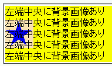
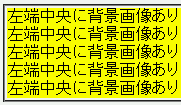

2002-10-12修正。WinIE6.0でもバグが発生しました。
background-repeatプロパティにrepeat以外の値を指定すると、背景がまったく印刷されない。
<style type="text/css">
div.a {
background-image: url(../img/img01.png);
background-repeat: no-repeat;
background-position: left;
background-color: yellow;
}
</style>
<div class="a">左端中央に背景画像あり<br>……</div>
ボックス（背景が黄色）の左端に背景画像があります。
【解説】修正前の例示では、div要素の高さを確保するためにheightプロパティを指定していたため、バグが回避されていました。現在の例示では、高さの指定が削除されています。
WinIEは「背景の色とイメージを印刷する」にチェックを入れた状態です。
Moz1.0.1での表示（印刷プレビュー）
WinIE6.0での表示（印刷プレビュー）
実際にこのページを印刷してみたところ、WinIE6.0では背景画像も印刷されました。WinIE6.0では背景画像が印刷に反映されませんでした。なお、背景色は印刷に反映されました。
背景が指定された要素の幅（widthプロパティ）または高さ（heightプロパティ）を明示すると背景画像が印刷されるそうです。
WinIE6.0では修正されているようです。WinIE6.0では不具合の発生が確認されました。